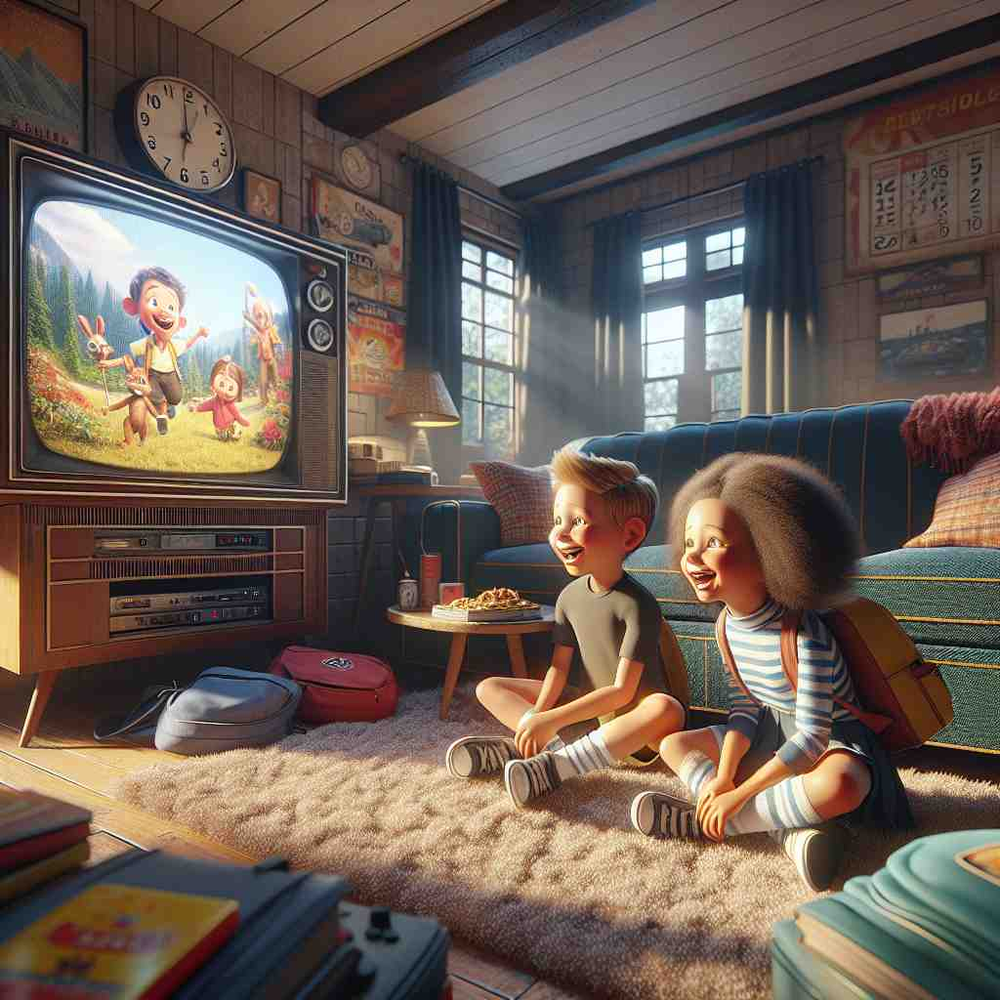
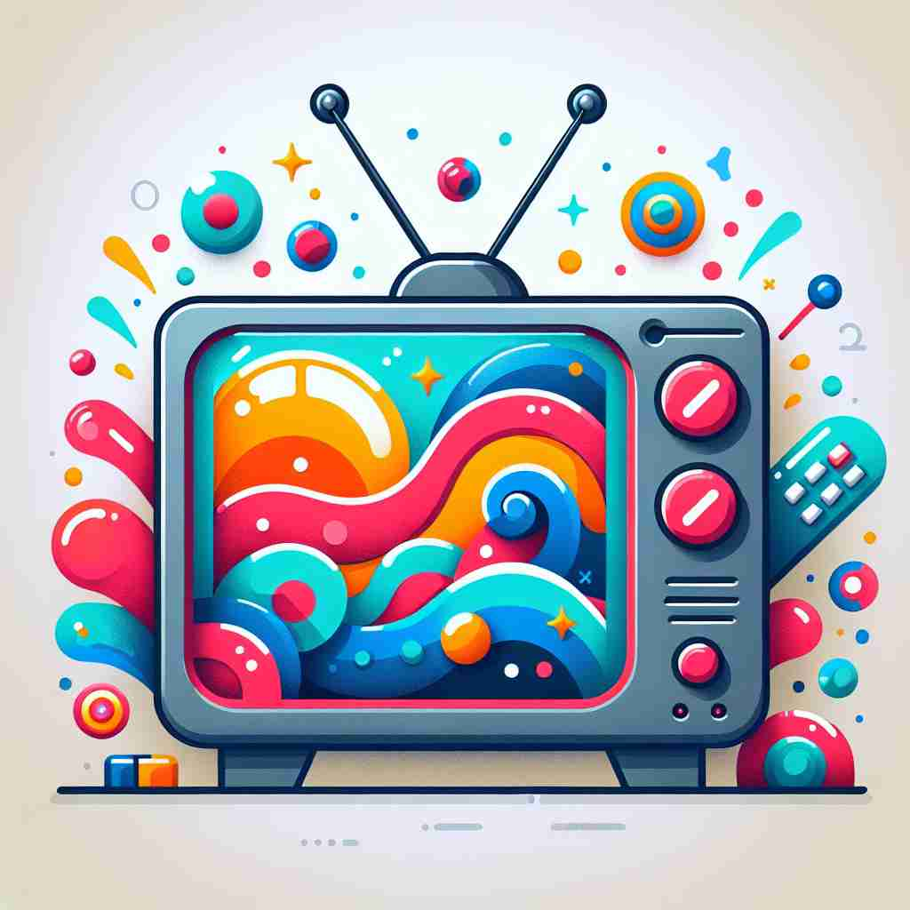

💬 The family gathers to watch TV together in the evening. 一家人晚上聚在一起看电视。

💬 The children love to watch TV on rainy days. 孩子们喜欢在雨天看电视。
💬 They love to watch TV during the big soccer games. 他们喜欢在重要的足球比赛期间看电视。

💬 I like to watch TV in the evening. 我喜欢在晚上看电视。
🧠 想象一台电视机（TV）作为核心。这个设备不仅代表了物理上的电视机，还延伸到了电视行业、电视节目，以及任何与电视相关的事物。通过这个中心意象，你可以轻松联想并记住'TV'的各种用法。
🔈 [ˌti: ˈvi:]
🗝️ n. a device that receives broadcast signals and displays moving images and sound 一种接收广播信号并显示动态图像和声音的设备。
🎭 想象在一个温馨的客厅里，一家人围坐在沙发上，电视机正播放着一部热门电影。电视屏幕上影像清晰，声音环绕全屋，所有人都津津有味地盯着。这个场景展示了电视作为接收广播信号并显示动态画面和声音的设备的功能。
💬 We watched the news on TV last night. 我们昨晚在电视上观看了新闻。
🌳 TV 是 'television' 的缩写，词根 'tele-' 来自希腊语，意为 '远'，'vision' 是 '视觉'。合起来表示 '远距离视觉传输'。
🕸️ 1.television: 电视 2.telegraph: 电报 3.telephone: 电话
💡 记忆 'TV' 时，可以联想为 'television' 的缩写，'tele-' 表示远距离，'vision' 是视觉，因此是能在远处看到的设备，即电视。